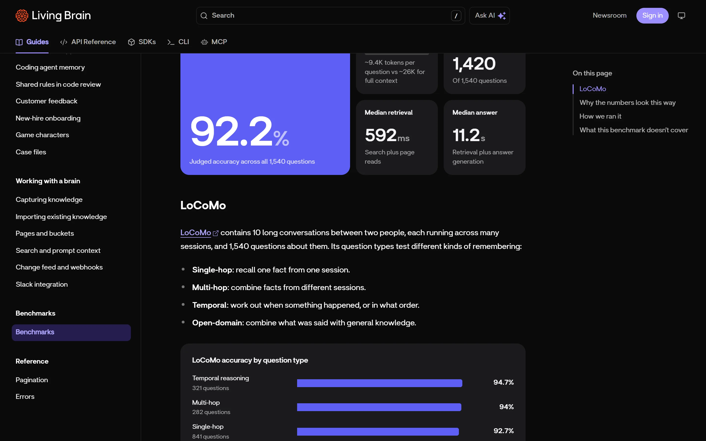
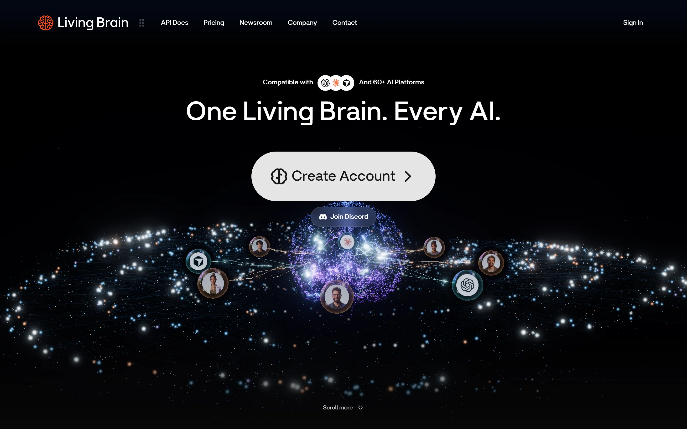

AIの記憶を、
モデルの外に置く。
Living Brain は、会話・文書・議事録から作った知識をモデルの外に蓄積し、 ChatGPT、Claude、Cursor など複数のAIから同じ記憶を読み書きできるようにするサービスです。 このノートは、公開仕様と一次データだけを使って、その中身を再構成したものです。
解決しようとしている問題
記憶が、モデルとツールの中に閉じている。これがすべての出発点です。
これまで 記憶がサイロ化する
ツールを乗り換えるたびに、同じ説明をやり直す。文脈は共有されない。
Living Brain 記憶を1か所に
モデルを替えると失われる資産だからこそ、モデル中立の記憶層は保険として機能します。Living Brain の主張の核はここにあります。
仕組み：5段のパイプライン
情報は「保存」されるのではなく、「ページとして編集」されます。
なぜ「全文書き換え」なのか
断片を足していく方式だと、同じ話題が複数箇所に散らばり、矛盾も直りません。 Living Brain は事実が届くたびに1枚のページを書き直すため、答えを読むときの文脈が1か所に揃います。
矛盾は消さずに残す
新しい情報が既存ページと食い違うと、上書きせず contested（係争中）にします。
両方の主張を保持し、人が resolve するまで「議論中」として扱います。
書き込みがページ全体に比例するため、記憶が育つほど1回あたりのトークン消費は増えます（原価は非公開。これは仕様からの推測です）。
データの形
API仕様（OpenAPI 3.1）から復元したモデル。111個のスキーマで定義されています。
sourcetopicentityprojectdecisionbrief
pageType の6種
ライフサイクル
| status | 意味 |
|---|---|
active | 現行 |
stale | 最近参照されていない |
contested | 矛盾を抱えている |
deprecated | 置き換え済み |
archived | 利用者が退避 |
どの段で失敗しても、ページ保存と埋め込みは独立して扱われます。
普通のRAGと何が違うのか
「断片を渡す」か「編集済みのページを渡す」か。設計の分かれ目はここです。
チャンク型RAG
文書を細かく切り、質問に近い断片を数個集めてモデルに渡す。モデルは毎回つなぎ合わせる。
弱点：同じ話題が重複する / 古い記述と新しい記述が同居する
ページ合成型（Living Brain）
事実が届くたびにページを書き直して統合する。質問時は完成したページを数枚読むだけ。
強み：文脈が1枚に揃う / 読み出しトークンが少ない
読み出しは軽くなりますが、書き込みは重くなります。誤ったマージが起きると、1枚のページが丸ごと間違うリスクもあります。同社が「1位と2位の差が小さいときは保留する」設計にしているのは、この失敗への対策です。
「92.2%」の分母を数え直す
公開データセットを取得し、問題の内訳を自分で集計しました。
LoCoMo の公式データには 1,986問 が入っています。Living Brain が公表しているのは 1,540問。差の 446問 は「答えられない質問（adversarial）」で、評価対象から外されています。
カテゴリ別の内訳も一致
| 種類 | 問題数 | 正答率 |
|---|---|---|
| Temporal | 321 | 94.7% |
| Multi-hop | 282 | 94.0% |
| Single-hop | 841 | 92.7% |
| Open-domain | 96 | 74.0% |
公称値は再計算できる
カテゴリ別の正答率を問題数で重み付けすると 92.19%。公表値 92.2% と一致します。内部の整合性は取れています。
ただし回答モデルは GPT-5。他社の公表値（例：Mem0 の 66.9%）とは、回答モデルも判定方法も違うため単純比較はできません。
同じテストなのに、数字が2つある
トップページと公式ドキュメントで、レイテンシの記載が食い違っています。
回答時間も 3.7秒 と 11.2秒。どちらも同じバッチ（f8d531ac, 2026-11-01）を指しています。測定条件の再定義か、更新漏れかのどちらかです。
公式ドキュメントの画面を確認する

導入前に確認すべき3点
技術ではなく、契約と設計の話です。
削除の連鎖が切れている
出典を削除しても、そこから生成されたページは残ります。公式ドキュメントに明記されています。消去が必要な用途では、ページも個別に削除する運用が要ります。
AI訓練はオプトアウト式
プライバシーポリシー上、既定ではサービス利用データがAI改善に使われ得ます。使わせたくない場合は明示的にオプトアウトが必要です。
数値は単一の実行結果
92.2% は1回の実行の結果で、複数回の平均ではありません。公式ページにも「Each figure on this page comes from a single run」と書かれています。
料金体系を確認する
公開されている接点
同じ記憶に、4つの入口から届きます。
API / SDK / CLI
OpenAPI 3.1 で50パス・60オペレーション。TypeScript / Python SDK と Rust 製 CLI は、いずれも Fern で自動生成されています。
REST@living-brain/sdklivingbrain (CLI)webhooksSlackTelegram
MCP は2系統ある
APIキーで使う生成型サーバー（60ツール）と、OAuthでサインインする型（12ツール＋リソース）が別々に存在します。
fernmcp.dev/livingbrainapi.livingbrain.com/mcp


調査の方法と限界
結論はすべて、再実行できる形で残しています。
静的な証拠
OpenAPI仕様、公式ドキュメント24ページ、MCPのツール一覧、公開SDK/CLIのソース、npmメタデータ、GitHubの履歴。
実行時の観測
REA による受動的なブラウザ観測。DOM・アクセシビリティツリー・リソース・ストレージの鍵を記録。JavaScriptの評価やページ操作は行っていません。
一次データの再計算
LoCoMo の公開データを取得し、問題数・カテゴリ・正答率の重み付き平均を Python で再計算。
APIキーを用いた動的検証（削除の連鎖、冪等性、export→再取り込み、実コスト）は未実施です。ベンチマークの独立再現も行っていません。レポートでは該当箇所を「不明」として残しています。
Living Brain は ChatAndBuild の製品です。本ページは批評・分析を目的として作成しました。 数値はすべて公開情報から再計算したもので、ベンダーによる確認は受けていません。